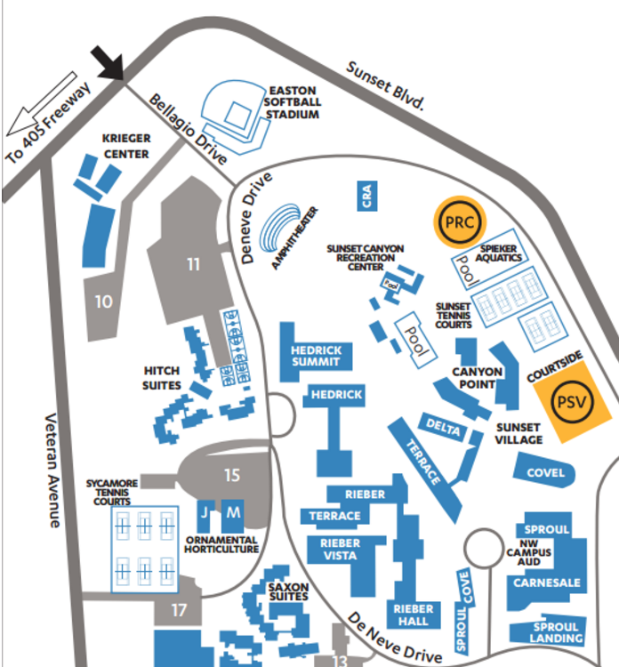

We provide free income tax preparation and assistance in financial and tax planning to low-income, disabled, and elderly individuals in the Los Angeles community since 1987. It is our goal to help people and educate them in filing tax returns to help clarify the process and provide assistance to those who otherwise would go without aid. Each year, we train approximately 200 UCLA undergraduate students in personal income tax preparation. In 2016, our volunteers assisted approximately 1,225 clients, saving them nearly $300,000 through tax refunds and credits.
During fall quarter, volunteers will be equipped to file tax returns through interactive training sessions. In winter and spring, VITA volunteers file client tax returns both on the UCLA campus and in the Los Angeles area.
We are now accepting applications for the 2016-2017 school year! Please click on the button below:
Click on the button below to view all upcoming events. If you happen to have any questions, please don't hesitate to contact us.
No events yet! Check back soon for updates.
What do I need to bring to have my taxes filed?
Photo ID, Social Security Card, W-2 forms and other pertinent forms including any 1099s, 1098-T (if you're a student)
Who can file their taxes with VITA?
We primarily serve low-income individuals residing in the state of California. We are unable to file itemized tax returns and non-California state tax returns.
What should I bring to the tax site?
Do I need to make an appointment?
We accept walk-ins, but due to limited time and availability on each day, we cannot guarantee walk-ins will be served.
Why are VITA members qualified to file on my behalf?
All of our volunteers have undergone about 20 hours of tax filing training and are certified by the IRS to file tax returns. We also have quality reviewers who double and triple check each tax return to ensure proper filing.
How do I sign up for appointments? When and where are tax sites?
Please visit our Events page.
There are no appointments available! What do I do?
Due to our high demand as we get closer to the filing deadline, appointments are limited and go quickly. You are welcome to walk-in; we recommend you come as early as possible since appointments have priority.
What is the average wait time for walk-ins?
Depending on how busy our tax sites are, the wait time may range from 15 minutes to several hours.
At what time do you stop accepting walk-ins?
We stop accepting walk-ins 1 hour before tax site closes. This is because the filing process is usually very lengthy, and we want to ensure accuracy.
How long will it take to complete my tax return?
Depending on your financial situation and filing status, the process widely ranges from 45 minutes to several hours. Volunteer tax preparers first fill out your tax return, then a volunteer Quality Reviewer verifies the entered data and prints all necessary documents.
If I don’t have enough money in my account to pay my tax due, what do I do?
First, you should always file your return on time to minimize your tax penalties. A tax extension does not give you more time to pay any taxes owed. It only extends the deadline for filing your return! If you can pay all your taxes in 120 days or less, you may qualify for a short-term extension to pay from the IRS; check the IRS website. You can also pay off your debt over time by applying for an installment agreement, which is a monthly payment plan. You may qualify for an online installment payment agreement with the IRS as long as you owe $50,000 or less.
When will I get my refund?
If you e-file with us, we process returns at the end of every week and send it to the IRS. The IRS can take from two weeks to a month to process your returns and deposit your refund.
Where can I park?

Parking Rates/ Fee: UCLA Parking Pay Stations give you short-term parking options in lots and structures located throughout campus. Rates range from $1.00 for 20 minutes to $12 for the entire day.
Feel free to also contact us at vitaucla@gmail.com